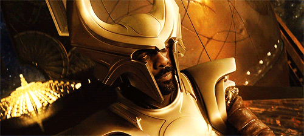

EVIDENCE
Thor: Dark World:
Heimdall says, "I can see all souls in the nine realms."

Avengers: Age of Ultron:
Thor has a vision where Heimdall's eyes have been taken.
Scene From Movie
Thor: Ragnarok:
Thor asks Heimdall to "let him see" and then Heimdall teleports Thor to Asgard.
He tells Thor, "I see you, but you're far away."
This implies that Heimdall can teleport people's energies, their consciousness,
or maybe even their soul to a different location.
Scene From Movie
CONCLUSION
This leads me to believe that the original container for the Soul Stone was meant to be Heimdall's eyes.
But when it came time to make Avengers: Infinity Game, they scrapped this idea and instead made the Soul Stone be located on planet Vormir.
| Did I like this theory? | Did I prefer the movie explanation? |
|---|---|
| YES | NO |